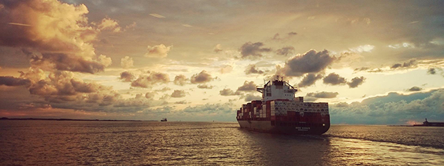
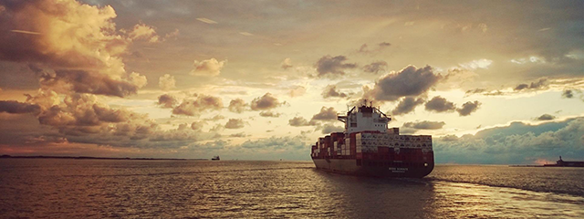
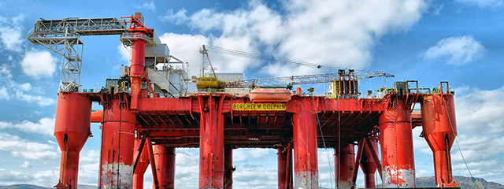
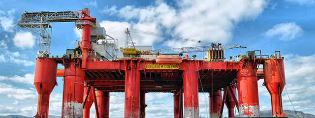

연혁
- 세계 정상을 향하여
- IT사업의 추진 등 사업의 고기술화와 고부가치화를 적극 추진함으로써 국내는 물론 세계 정상을 향해 나아가고 있습니다.
-
-

2022 ~
현재원격자율운항 실선(삼성 T-8호) 테스트 성공
-
- 2022
- 업계 최초 LNG 액화 기술 ABS로부터 상세 설계 인증
- 세계 최대 VLEC 2척 수주
- 업계 최초 미국 선급인 ABS 구축
- 대규모 LNG운반선 발주 권리 보장 약정서 체결
- 페트로나스 FLNG '두아(DUA)' 출항
-

-
-
2019 ~
2020업계 최초 미국 선급인 ABS 구축
-
- 2020
- 유상증자 완료(신주상장, 1억 5,912만주)
- Semi FPS 1기 수주(미주지역 선주)
- 업계 최초 미국 선급인 ABS 구축
- 21,100TEU급 초대형 컨테이너선 수주
- 수중 선체청소로봇 개발
- 2019
- 업계 최초 조선해양 통합 LNG 실증 설비 착공
- 1,348억원 규모 특수선 1척 수주(유럽지역 선사)
- LNG연료추진 초대형 원유운반선 기본 승인 획득
- 친환경 LNG연료추진선 첫 출항 성공
- 제35회 정기주주총회
-
-
-

2010 ~
2018노르웨이 스타토일(Statoil)社로부터 해상플랫폼 2기 수주
-
- 2018
- 에지나 FPSO 첫 원유 생산 성공
- 요한 스베드럽 P1 플랫폼 출항
- 세계 최초 친환경 무용제 도료 상선 적용
- 세계 최초 '공기윤활시스템' 초대형 컨테이너선 적용
- 세계 최초 스마트십 사이버 보안 선급인증 획득
- 2015
- 성동조선과 경영협력 협약 체결
- 21,100TEU급 초대형 컨테이너선 수주
- 수중 선체청소로봇 개발
- 1,348억원 규모 특수선 1척 수주(유럽지역 선사)
- 업계 최초 조선해양 통합 LNG 실증 설비 착공
- 2010
- 세계 최초 거제조선소에 차세대 와이브로 구축
- 풍력발전기 생산 공장 준공
- 요한 스베드럽 P1 플랫폼 출항
- 세계 최초 친환경 무용제 도료 상선 적용
- 유상증자 완료(신주상장, 2억 4,000만주)
-

-
-
2000 ~
2009디지털시스템 사업 진출공
-
- 2009
- 대한민국 풍력발전설비 1호기 수출
- 국내 최초 LNG선 친환경 여객선 개발
- 세계 최대 크기의 26만6천 입방미터급 LNG선 건조
- 선박연구센터 모형선 300기 모형 프로펠러 400기 달성
- 세계 최초 극지용 드릴십 건조
- 2005
- 중국 롱청 블록공장 준공
- 세계 최대 해상플랫폼 필턴B 완성
- 삼성중공업 500척 선박 인도 달성
- 세계 최초로 쇄빙유조선 첫 수주
- 거제 삼성중공업 호텔 개관
- 2000
- 최첨단 선박 자동설계시스템 GS CAD 전면 도입
- 12,000TEU급 컨테이너 선박 개발
- 디지털사업팀, 새브랜드BaHa 출시
- 삼성중공업 안전 체험관 첫 개관
- 대형 여객선 국내 첫 진수
-